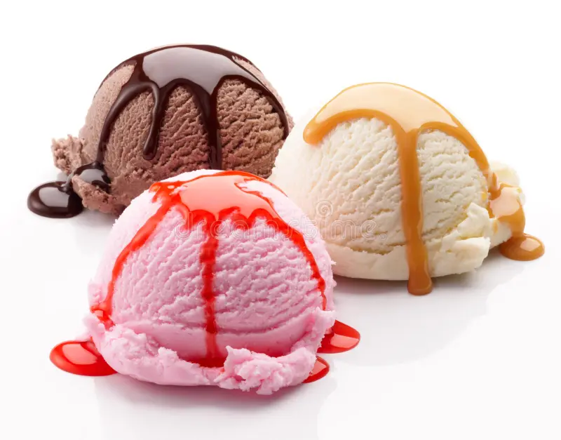
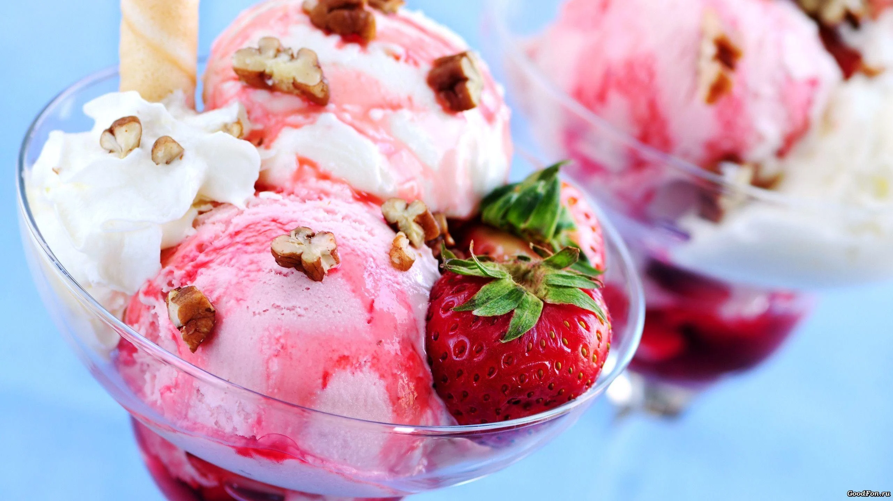

A new adventure in ice cream
Certainly! Creating a new adventure in ice cream involves experimenting with unique flavors, textures, and presentations.
Here's an idea for a distinctive ice cream experience
our core flavours


Flavor:
Spiced Maple Bacon Crunch
Ingredients:
- Vanilla ice cream base
- Maple syrup
- Crispy bacon bits
- Cinnamon or pumpkin spice
Instructions:
Vanilla Ice Cream Base:
- Use your favorite vanilla ice cream recipe or buy a high-quality vanilla ice cream.
- If you're feeling adventurous, try making a custard-based ice cream with egg yolks for a rich and creamy texture.
Maple Infusion:
- Warm up maple syrup in a small saucepan.
- Add a pinch of cinnamon or pumpkin spice to the maple syrup and let it infuse for a few minutes.
- Allow the maple syrup to cool before incorporating it into the ice cream.
Bacon Bits:
- Cook bacon until crispy and let it cool.
- Once cooled, chop or crumble the bacon into small bits.
Assembly:
- Mix the infused maple syrup into the vanilla ice cream base. The amount depends on your taste preferences; start with a few tablespoons and adjust as needed.
- Gently fold in the crispy bacon bits, distributing them evenly throughout the ice cream.
Freezing:
- Transfer the mixture into an ice cream maker and churn according to the manufacturer's instructions.
- If you don't have an ice cream maker, pour the mixture into a lidded container and freeze, stirring every 30 minutes for the first few hours to prevent ice crystals.
Serve:
- Once the ice cream reaches the desired consistency, scoop it into bowls or cones.
Optional Garnish:
- For an extra crunch, sprinkle some additional bacon bits on top before serving.
start your orders